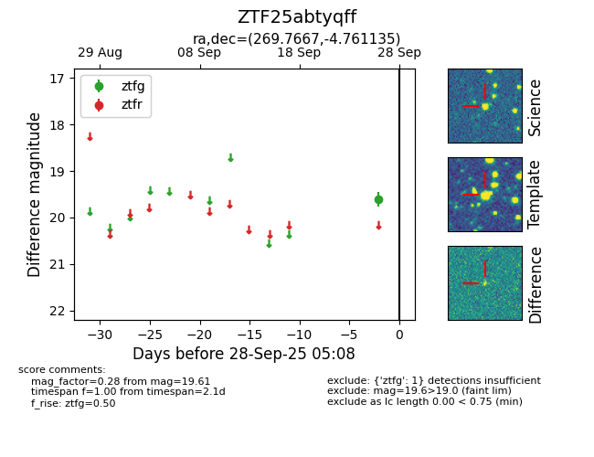

FINK: ZTF25abtyqff
Lasair: ZTF25abtyqff
ALeRCE: ZTF25abtyqff
ZTF25abtyqff (ztf,fink)
equatorial (ra, dec) = (269.7667,-4.76114)
galactic (l, b) = (22.6084,+9.38480)

last ztfg=19.61
1 ztfg detections